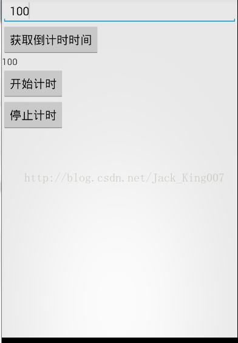

练手小项目（3）倒计时
正好想复习线程，就整个例子，练习练习 先看布局，我在解释思路

一个Edittext 输入倒计时间
一个button 获取用户输入时间 显示在textview
一个textview 显示 倒计的时间
开始计时是一个button 主要开启一个timertask 更新textview的时间
停止即使也是一个button 主要停止timertask
<------------------------------------------------------------------------布局------------------------------------------------------------------------->
<LinearLayout xmlns:android="http://schemas.android.com/apk/res/android"
xmlns:tools="http://schemas.android.com/tools"
android:layout_width="match_parent"
android:orientation="vertical"
android:layout_height="match_parent"
>
<EditText
android:id="@+id/inputtime"
android:layout_width="fill_parent"
android:layout_height="wrap_content"
android:ems="10" >
<requestFocus />
</EditText>
<Button
android:id="@+id/gettime"
android:layout_width="wrap_content"
android:layout_height="wrap_content"
android:text="获取倒计时时间" />
<TextView
android:id="@+id/time"
android:layout_width="wrap_content"
android:layout_height="wrap_content"
/>
<Button
android:id="@+id/starttime"
android:layout_width="wrap_content"
android:layout_height="wrap_content"
android:text="开始计时" />
<Button
android:id="@+id/stoptime"
android:layout_width="wrap_content"
android:layout_height="wrap_content"
android:text="停止计时" />
</LinearLayout>
<------------------------------------------------------------------------布局------------------------------------------------------------------------->再想想 用户输入时间，然后button获取时间 然后显示在textview很好实现 ，怎么让他一秒秒减少呢，这时候timer就出现了
//Timer是一种定时器工具，用来在一个后台线程计划执行指定任务。它可以计划执行一个任务一次或反复多次。
//TimerTask一个抽象类，它的子类代表一个可以被Timer计划的任务。
这个时候 减少时间解决了，怎么更新UI呢，这时候handler出现了，他是安卓的消息机制能解决线程无法更新UI的问题只需要发送一个msg
————————————————————————————————————java代码——————————————————————————————————
1.先初始化控件 并设置点击事件
/**
* 初始化控件
*/
private void initView(){
inputtime = (EditText) findViewById(R.id.inputtime);
getTime = (Button) findViewById(R.id.gettime);
startTime = (Button) findViewById(R.id.starttime);
stopTime = (Button) findViewById(R.id.stoptime);
time = (TextView) findViewById(R.id.time);
getTime.setOnClickListener(this);
startTime.setOnClickListener(this);
stopTime.setOnClickListener(this);
}-----------------------------------------------------------------------
2.点击事件的处理
@Override
public void onClick(View v) {
switch (v.getId()) {
case R.id.gettime:
//从用户输入的时间设置到textview
time.setText(inputtime.getText().toString());
//int转成String
i = Integer.parseInt(inputtime.getText().toString());
break;
case R.id.starttime:
//开始计时
startTime();
break;
case R.id.stoptime:
//停止计时
stopTime();
break;
}
}--------------------------------------------------------------------计时的业务 已经UI得更新3.
public void startTime(){
//1.获得timer类实例
timer = new Timer();
//2.获得TimerTask类实例
task = new TimerTask() {
//3.run方法执行线程任务
@Override
public void run() {
//4.用户输入的事件 开始自减
i--;
//5.启用安卓消息机制进行UI更新
Message message = mHandler.obtainMessage();
message.arg1 = i;
//6.发送消息给handlermessge进行操作
mHandler.sendMessage(message);
}
};
//7.等待1秒以后开始执行
timer.schedule(task, 1000);
}-------------------------------------------------------handler代码-----------------------------------------------------------
private Handler mHandler = new Handler(){
public void handleMessage(Message msg) {
//8.UI更新
time.setText(msg.arg1+"");
//9.继续开始计时,等待结束
startTime();
};
};----------------------------------------------------------timer 停止
public void stopTime(){
timer.cancel();
}----------------------------------------------------------End
package com.jikexueyuan.counttime;
import java.util.Timer;
import java.util.TimerTask;
import android.app.Activity;
import android.os.Bundle;
import android.os.Handler;
import android.os.Message;
import android.view.Menu;
import android.view.MenuItem;
import android.view.View;
import android.view.View.OnClickListener;
import android.widget.Button;
import android.widget.EditText;
import android.widget.TextView;
public class MainActivity extends Activity implements OnClickListener{
private EditText inputtime;
private Button getTime,startTime,stopTime;
private TextView time;
private int i = 0;
//Timer是一种定时器工具，用来在一个后台线程计划执行指定任务。
//它可以计划执行一个任务一次或反复多次。
private Timer timer = null;
//TimerTask一个抽象类，它的子类代表一个可以被Timer计划的任务。
private TimerTask task = null;
@Override
protected void onCreate(Bundle savedInstanceState) {
super.onCreate(savedInstanceState);
setContentView(R.layout.activity_main);
//初始化控件
initView();
}
/**
* 初始化控件
*/
private void initView(){
inputtime = (EditText) findViewById(R.id.inputtime);
getTime = (Button) findViewById(R.id.gettime);
startTime = (Button) findViewById(R.id.starttime);
stopTime = (Button) findViewById(R.id.stoptime);
time = (TextView) findViewById(R.id.time);
getTime.setOnClickListener(this);
startTime.setOnClickListener(this);
stopTime.setOnClickListener(this);
}
@Override
public void onClick(View v) {
switch (v.getId()) {
case R.id.gettime:
//从用户输入的时间设置到textview
time.setText(inputtime.getText().toString());
//int转成String
i = Integer.parseInt(inputtime.getText().toString());
break;
case R.id.starttime:
//开始计时
startTime();
break;
case R.id.stoptime:
//停止计时
stopTime();
break;
}
}
private Handler mHandler = new Handler(){
public void handleMessage(Message msg) {
//8.UI更新
time.setText(msg.arg1+"");
//9.继续开始计时,等待结束
startTime();
};
};
public void startTime(){
//1.获得timer类实例
timer = new Timer();
//2.获得TimerTask类实例
task = new TimerTask() {
//3.run方法执行线程任务
@Override
public void run() {
//4.用户输入的事件 开始自减
i--;
//5.启用安卓消息机制进行UI更新
Message message = mHandler.obtainMessage();
message.arg1 = i;
//6.发送消息给handlermessge进行操作
mHandler.sendMessage(message);
}
};
//7.等待1秒以后开始执行
timer.schedule(task, 1000);
}
public void stopTime(){
timer.cancel();
}
}
--------------------------------------------------------------------------------